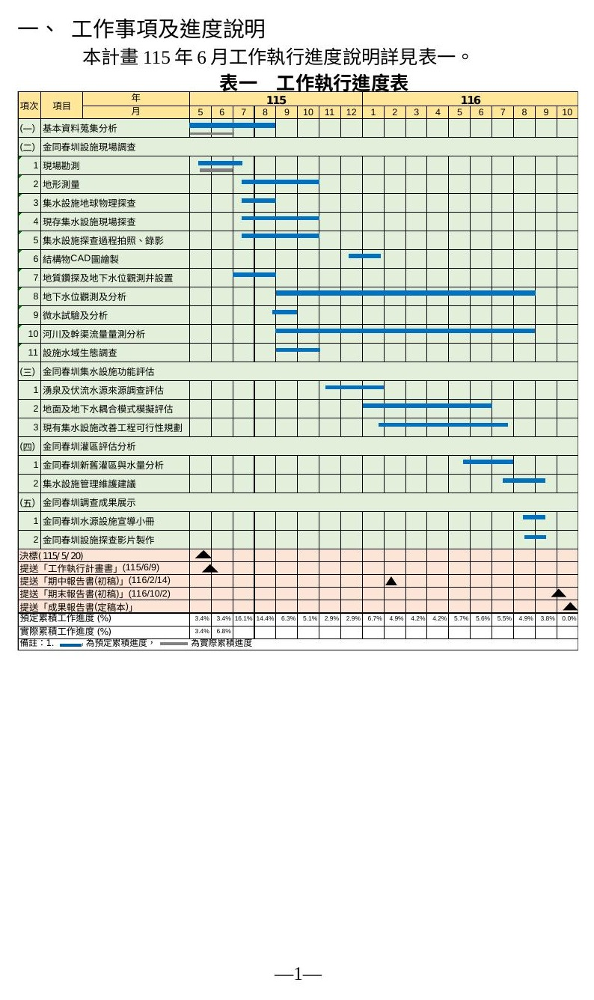
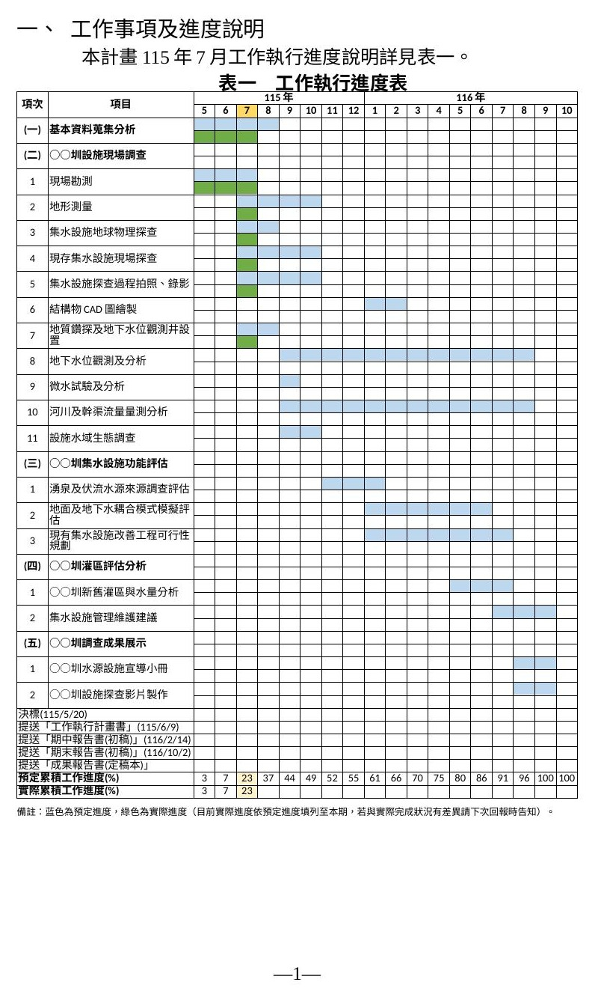
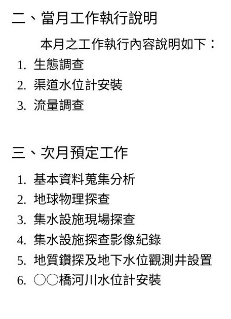
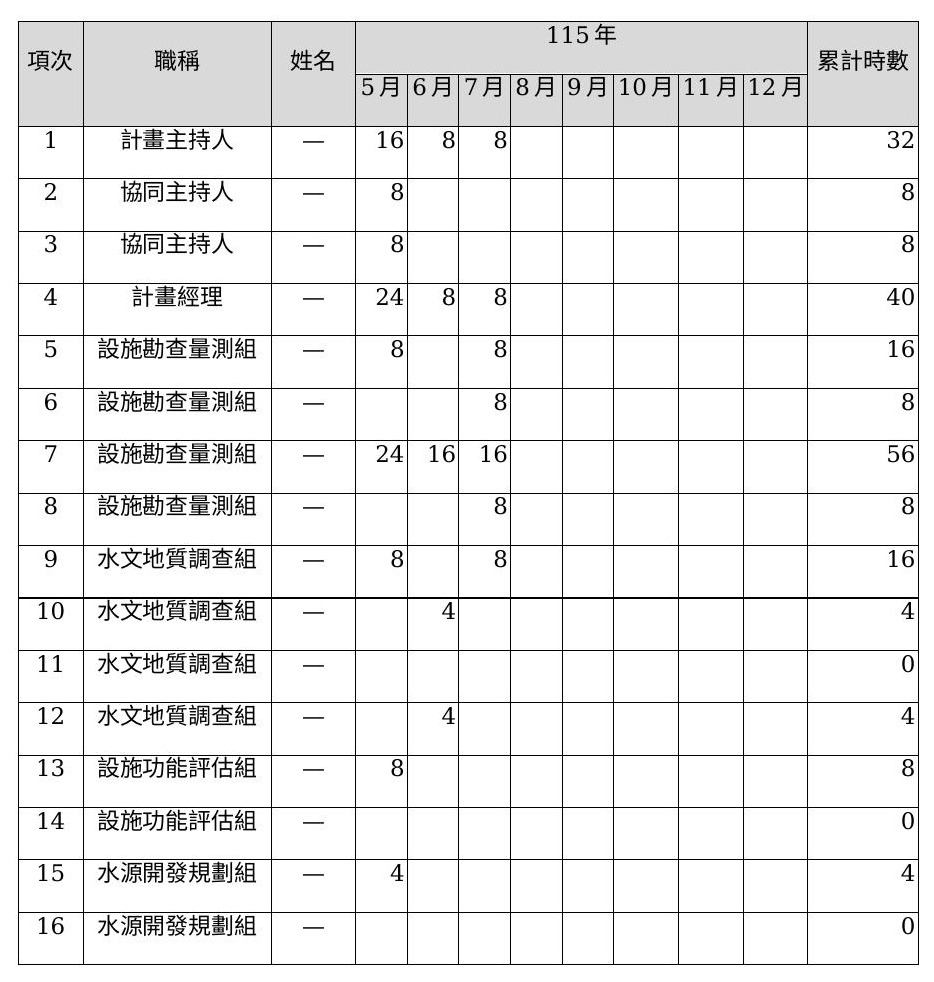

跟 Claude 一起把工程顧問案的每月進度報告，從「每月手動截圖＋人工比對公文」磨成一套可重複、可驗證的工作流，最後收斂成一個能套用到其他專案的 skill。
月報裡有五個每月都要更新的區塊，更新邏輯各不相同——甘特圖是純資料運算，公文是比對現有紀錄，敘述性內容則要參考上一份報告的寫法：
AI 自動把預定進度更新到最新月份；實際進度預設等於預定進度，除非使用者另外回報差異。


圖中的圳名已用「○○」替換，實際客戶／機關資訊不對外公開。

依當月實際執行的工作項目，對照人力組織的分組與職級去估算工時。姓名部分已在圖中遮蔽。

使用者提供簽核系統匯出的 CSV，AI 自動辨識欄位、比對既有清單、填入並校對，避免重複列或漏列。下面是示意用的假資料，不是真實公文內容：
| 序號 | 發文日期 | 發文單位 | 發文字號 | 主旨 |
|---|---|---|---|---|
| 12 | 115/6/10 | ○○機關 | ○字第00123號 | 檢送「○○計畫」115年5月工作月報，請查照。 |
| 13 | 115/6/12 | ○○機關 | （未提供） | 同意本處於○○地設置臨時監測井案，請查照。 |
| 14 | 115/6/15 | ○○公司 | ○字第00456號 | 檢送「○○計畫」保險單正本，請查照。 |
第 13 筆刻意示範沒有文號的情況：這種公文 AI 會依日期與主旨內容自行假設比對邏輯，但不會悄悄套用——而是明確標註「這是我的假設」，請使用者確認後再收進清單。
圖一（計畫組織）是報告裡固定不變的部分，這次沒有調整，直接沿用範本，所以不放在這裡的更新邏輯中。
沒有這一步，自動化根本無從談起——貼圖沒辦法被程式更新，只能每月手動重截。改成表格之後，資料才能直接從 Excel 算出來、動態上色。
圖片壞掉的根因是表格 XML 元素寫入順序不合規範，肉眼完全看不出來。解法是每次交付前都跑一次正式驗證工具，把「看起來沒問題」升級成「有工具把關」。
同一份公文可能在系統上出現兩個不同簽核時間，只看文字內容會誤刪真實存在的紀錄。
遇到沒有文號可比對的公文，AI 會依日期、主旨內容自己假設比對邏輯，但不會直接套用——而是明確標註「這是我的假設」，交給使用者確認，把最終判斷權留給人。
這次協作的三個成果，都是透過對話直接遞送的檔案，沒有公開網址——點卡片可以看更完整的說明。
把自己的定期報告交給 Claude 自動化之前，可以先檢查這幾件事：
工程顧問案專屬的月度交付物（機關與標案全名不對外公開），本篇案例示範的是 115 年 7 月版本。系統建好之後，期程表已經內嵌在報告的表格裡，不用再另外交付一份 Excel 檔案。
記錄這套機制怎麼建立起來、每月要給什麼、Claude 會拿到什麼、使用者要檢查什麼的參考文件。
把這次月報自動化踩過的坑封裝成通用版本，可安裝後套用到其他有「Word報告＋Excel排程表＋往來文件」的定期報告專案。